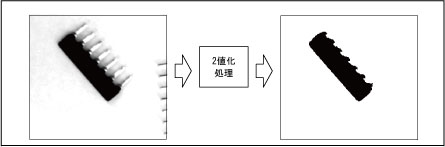

VISBINA
（ステートメント）

画面を2値化処理します。

VISBINA <ウィンドウ番号>，<X座標>，<Y座標>，<2値下限>[，<2値上限>]

<ウィンドウ番号>
ウィンドウの番号を指定します。（0～511）
<X座標>
X座標を指定します。（0～511）
<Y座標>
Y座標を指定します。（0～479）
<2値下限>
2値化する際の下限レベルを指定します。（0～254 下限 < 上限）
<2値上限>
2値化する際の上限レベルを指定します。（1～255 下限 < 上限）
省略時 255を指定します。
2値化の例


-
処理範囲をウィンドウで指定します。
-
指定したウィンドウの位置が画面をはみ出す場合、実行結果はエラーになります。
-
指定できるウィンドウの形状は矩形の角度0°のみです。その他の ウィンドウの場合、エラーになります。
-
処理対象はVISWORKPLNで指定した画面になります。
-
本命令はロボットコントローラではμVisionボード（オプション）が必要です。


|
VISSCREEN 1,0,1
|
'描画画面0番に即時描画します。
|
|
WINDMAKE R,1,100,100,0,2
|
'ウィンドウ1番を矩形ウィンドウに設定します。
|
|
CAMIN 1
|
'カメラ映像を格納メモリに取得します。
|
|
VISWORKPLN 0
|
'処理の対象画面を格納メモリ0番に設定します。
|
|
VISPLNOUT 0
|
'格納メモリ0番をモニタに表示します。
|
|
VISBINA 1,100,100,128,255
|
'ウィンドウ内を2値化します。
|
|
WINDDISP 1
|
'ウィンドウを描画します。
|